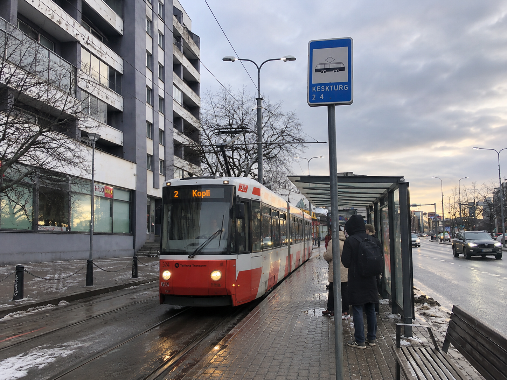

November 21, 2026 · 13:15
Made it to Riga
Got dropped off near this huge building. Pretty cool architecture.
Walked around for a bit and took some photos. Weather's miserable, so I won't stay long.
Time to find another ride to Vilnius.

@juris.jpg
Travel notes and other stuff.
November 21, 2026 · 13:15
Got dropped off near this huge building. Pretty cool architecture.
Walked around for a bit and took some photos. Weather's miserable, so I won't stay long.
Time to find another ride to Vilnius.
November 20, 2026 · 18:40
I've taken the bus between the Baltic capitals a few times, so I thought I'd try something different.
Starting my trip from Tallinn tomorrow and planning to hitchhike to Vilnius, with a stop in Riga along the way. Going to try to do it all in one day. We'll see how that goes.
I'll post some updates here.
